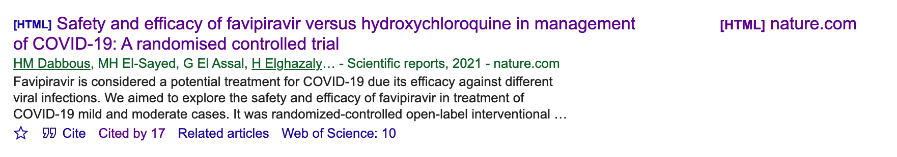
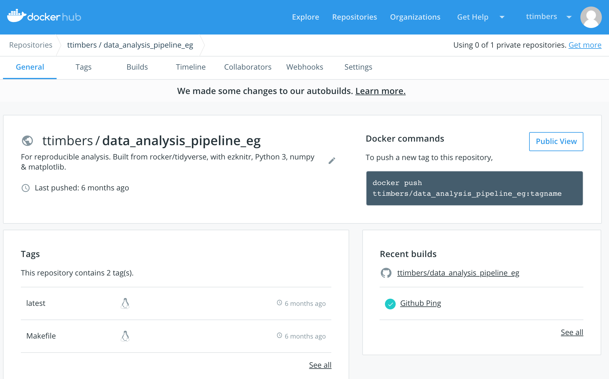
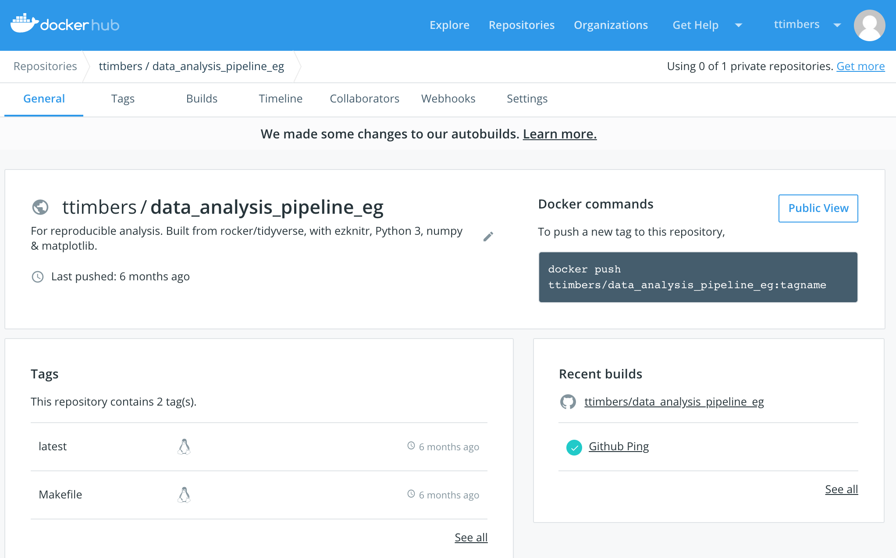

How do reproducible and trustworthy workflows impact data science?
Contents
How do reproducible and trustworthy workflows impact data science?¶
Topic learning objectives¶
By the end of this topic, students should be able to:
Define data science, and the related terms reproducibile and audible analysis
Give examples of workflows that are considered reproducible and trustworthy in the context of a data analysis
Explain why data analysis benefit from reproducibile and audible workflows
Provide real-life examples of how a failure in reproducible and trustworthy workflows has negatively impacted the outcome of a data analysis project
List three useful tools for facilitating organization and collaboration in complex data analysis projects
Describe the data analysis cycle
Explain how to mechanistically start a data analysis project
State and refine a data analysis question
List other potential sources of untrustworthiness in a data analysis (e.g., data source, mapping question to analysis, interpretation of results), and discuss how a data analysis that employs reproducible and trustworthy workflows can still be flawed
Data science¶
the study, development and practice of reproducible and auditable processes to obtain insight from data.
From this definition, we must also define reproducible and auditable analysis:
Reproducible analysis:¶
reaching the same result given the same input, computational methods and conditions \(^1\).
input = data
computational methods = computer code
conditions = computational environment (e.g., programming language & it’s dependencies)
Auditable/transparent analysis,¶
a readable record of the steps used to carry out the analysis as well as a record of how the analysis methods evolved \(^2\).
Why adopt this definition of data science?¶
We believe that data science work should both bring insight and employ reproducible and auditable methods so that trustworthy results and data products can be created.
Data products can be built via other methods, but we lack confidence in how the results or products were created.
We believe this stems from non-reproducible and non-auditable analyses:
lacking evidence that the results or product could be regenerated given the same input computational methods, and conditions
lacking evidence of the steps taken during creation
having an incomplete record of how and why analysis decisions were made
What makes trustworthy data science?¶
Some possible criteria:
It should be reproducible and auditable
It should be correct
It should be fair, equitable and honest
There are many ways a data science can be untrustworthy… In this course we will focus on workflows that can help build trust. I highly recommend taking a course in data science ethics to help round out your education in how to do this. Further training in statistics and machine learning will also help with making sure your analysis is correct.
Is this really important?¶
Yes! There are both small and big ways this can impact your work.
Let’s talk about some of these by sharing data-related workflows from the trenches:
In the next 10 minutes, I want you to think and write down a non-reproducible or non-auditable workflow you have used before at work, on a personal project, or in course work, that negatively impacted your work somehow (make sure to include this in the story). Here’s an example:
As a Masters student, I started to use R to do my statistical analysis. I obtained the results I needed from running my code in the R console and copying the results into the word document that was my manuscript. Six months later we were working on revisions requested by the reviewers and I could not remember which version of the code I ran to get my results. I eventually figured it out through much trial and error, but the process was inefficient and very stressful.
–Tiffany Timbers
When prompted, paste your story in the Google doc (link to be shared in class)
Finally, we will take 10 minutes to read at least 3 other stories from the trenches that have been shared.
An example with large impact¶

A research paper was published in March 2021 that claimed that a drug, Favipiravir, was a safe and effective alternative to another drug, hydroxychloroquine (a medication commonly used to prevent or treat malaria), in mild or moderate COVID-19 infected patients.
In September, 2021 the paper we retracted by the editors - in part due to reproducibility issues:
“After concerns were brought to the Editors’ attention after publication, the raw data underlying the study were requested. The authors provided several versions of their dataset. Post-publication peer review confirmed that none of these versions fully recapitulates the results presented in the cohort background comparisons, casting doubt on the reliability of the data. Additional concerns were raised about the randomisation procedure, as the equal distribution of male and female patients is unlikely unless sex is a parameter considered during randomisation. However, based on the clarification provided by the authors, sex was not considered during this process. The Editors therefore no longer have confidence in the results and conclusions presented.”
The problem doesn’t just stop once the article is retracted… Between the time the article was published and retracted, the article was cited 17 times!
How big is this problem?¶
Searching the Retraction Watch Database for “Results Not Reproducible” we find 635 records that match!

Does this just impact academia?¶
No! The use of non-reproducible tools can impact government and industry as well! Consider this case:

Source: https://www.bbc.com/news/uk-scotland-edinburgh-east-fife-53893101
What went wrong?
An audit found that the wrong spreadsheet matrix was copied over, and the calculation for only 4 air changes per hour, instead of the required 10 per hour, was done. This error was missed several times by human review of the spreadsheet.
How could this have been prevented via using reproducible tools?
If code instead of a spreadsheet was used for calculations, then unit tests could have been written to check the calculations. Also, the code could be abstracted to a well named function, or a function with well named arguments, that could have been more easily detected than a hidden formula in a spreadsheet.
More reasons to worry about workflows?¶
Reason 1:¶
It makes it easier to collaborate with your most imporant collaborator - YOU in 6 months!

Source: http://www.bonkersworld.net/building-software/

{kind=link}
Workflows & complex projects¶
What are complex projects?¶
I define complex projects as one that has at least one of the following:
two, or more, people directly working on the analysis
projects that involve two or more coding documents
projects that involve analysis of medium/large data
projects where you are working on a remote machine
projects that have many software or environment dependencies, or ones that are difficult or take a long time to install
As a project accumulates more of these features it grows further in complexity.
Complex projects without intentional Data Science workflows…¶

– Relativity by Maurits Cornelis Escher
Concrete examples of problems that can occur in complex analyses¶
An interesting result that you cannot recreate 😞
Your email inbox is full of information related to the project that only you have access too 😫
A small change to the analysis code requires re-running the entire thing, and takes hours… 😧
Activation time to becoming productive after taking a break from the project is hours to days 😴
Code that can only be run on one machine, and you don’t know why… 😵
How can we avoid such problems and chaos?¶
Workflow features to mitigate chaos¶
Version Control (Git & GitHub)
Executable analysis scripts & pipelines (Python/R scripts & Make)
Defined & shippable dependencies (Docker)
All of these features are a subset of those recommended by Hilary Parker in her 2016 Opinionated Analysis Development paper
1. Version Control¶
Version control is a tool which archives changes to file(s) over time.
These changes are archived in a way that you can later revisit different time points in the project.

source: http://swcarpentry.github.io/git-novice/
Many version control tools also have features that facilitate collaboration.
Git + GitHub are two of the most common softwares for version control (and so this is where I draw my examples from)

Example problem solved by version control¶
Problem: An extremely interesting result that you cannot recreate 😞
Solution: Version the code and the output of the analysis
Going back in time via commits¶

Going back in time via commits¶

Going back in time via commits¶

Going back in time via releases¶

{kind=link}
Going back in time via releases¶

Example problem solved by version control¶
Problem: Your email inbox is full of information related to the project that only you have access too 😫
Solution: Use GitHub Issues for communications related to the project
{kind=link}
GitHub Issues for project-related communications¶

GitHub Issues for project-related communications¶

source: https://github.com/LerouxLab/Celegans_wild_isolate_behaviour/issues
Version control contributes to better communication & team work¶
All collaborators/team members know where to find the latest (or earlier) version of the analysis (code and output)
All collaborators/team members have access to all communications associated with the analysis
2. Executable analysis scripts & pipelines¶
As analysis grows in length and complexity, one literate code document generally is not enough
To improve code report readability (and code reproducibility and modularity) it is better to abstract at least parts of the code away (e.g, to scripts)
These scripts save figures and tables that will be imported into the final report

Example problem solved by executable analysis scripts & pipelines¶
Problem: Activation time to becoming productive after taking a break from the project is hours to days 😴
Solution: Record the order scripts need to be run in, and their arguments in one “driver” script/pipeline file.
Create a recipe for your analysis¶

Example problem solved by executable analysis scripts & pipelines¶
Problem: A small change to the analysis code requires re-running the entire thing, and takes hours… 😧
Solution: Use a smart dependency tree tool to only re-run the parts that needs to be updated.
Make - one possible smart dependency tree tool¶
special file called a Makefile that contains the recipe for your analysis
Makefiles are “smart” and after changes, only run the parts of the analysis that has changed (as well as the parts that depend on the parts that changed)
Each block of code in a Makefile is called a rule, it looks something like this:
file_to_create.png : data_it_depends_on.dat script_it_depends_on.py
python script_it_depends_on.py data_it_depends_on.dat file_to_create.png
Makefiles are made of many rules, typically one rule for each time you run an analysis script
Make is not the only smart dependency tree tool - Apache Airflow, Prefect, snakemake & targets are also great options!
Example Makefile:¶
# run all analysis
all: doc/count_report.md
# make dat files
results/isles.dat: data/isles.txt src/wordcount.py
python src/wordcount.py data/isles.txt results/isles.dat
results/abyss.dat: data/abyss.txt src/wordcount.py
python src/wordcount.py data/abyss.txt results/abyss.dat
#create figures
results/figure/isles.png: results/isles.dat src/plotcount.py
python src/plotcount.py results/isles.dat results/figure/isles.png
results/figure/abyss.png: results/abyss.dat src/plotcount.py
python src/plotcount.py results/abyss.dat results/figure/abyss.png
# render report
doc/count_report.md: doc/count_report.Rmd results/figure/isles.png results/figure/abyss.png results/figure/last.png results/figure/sierra.png
Rscript -e "rmarkdown::render('doc/count_report.Rmd')"
Makefile dependency tree¶

Executable analysis scripts & pipelines contribute to better collaboration¶
Can be used by others to run/replicate the analysis
Makes it easier to understand the landscape of the project and for others to contribute
Reduces some of the challenges/frustrations of working with larger data sets
3. Defined & shippable dependencies¶
Dependencies are other things one need to install to run your code, and includes:
programming languages (e.g., R, Python, Julia, etc)
packages from programming languates (e.g., tidyverse, scikit-learn)
other tools you rely on (e.g., Make)
legacy code (e.g., perl scripts, fortran, etc)
Dependencies include versions as well as names!
Example problem solved by defined & shippable dependencies¶
Problem: Code that can only be run on one machine, you don’t know why… 😵
Problem: Long install times when setting up a remote machine for analysis 🙄
One possible solution: Containerizing your software and environmental dependencies
What are containers?¶
Containers are like a light-weight virtual machine, they allow you to share:
Python/R versions
package versions
other tools you rely on (e.g., Make)
legacy code (e.g., perl scripts, fortran, etc)
The most popular tool for this is Docker
Containers can be shared on DockerHub (similar to how code can be shared on GitHub)
What are containers?¶

source: Tools and techniques for computational reproducibility by Stephen R. Piccolo & Michael B. Frampton
 

{kind=link}
Instructions needed to run analysis on almost any machine:¶
Install Docker
Clone or download this GitHub repository
From the root of the cloned repository, type:
docker run --rm -v $(pwd):/home/rstudio/data_analysis_eg \
ttimbers/data_analysis_pipeline_eg make -C /home/rstudio/data_analysis_eg all
Defined & shippable dependencies contribute to democratization of Data Science¶
If you take care of packaging dependencies in a Docker container and distribute the container on DockerHub, you can add one line to your run instructions to your analysis to take away any installation pain your collaborators may face.
When to add these workflow features:¶
Version Control
ALWAYS
Executable analysis scripts & pipelines
When you start hiding code chunks/cells in your Rmd/Jupter notebook
Defined & shippable dependencies
When doing remote computing or when you have tricky dependencies

Life cycle of a data analysis project¶
 Source: R for Data Science by Grolemund & Wickham
Source: R for Data Science by Grolemund & Wickham

Source: Art of Data Science by Peng & Matsui
Revisiting the definition of data science & what is the question?¶
(we need to talk about this for your project)
the study, development and practice of reproducible and auditable processes to obtain insight from data.
For the latter part of this definition, it is critical that you match the correct data science methods to the type of statistical question you are asking.

1. Descriptive¶
One that seeks to summarize a characteristic of a set of data. No interpretation of the result itself as the result is a fact, an attribute of the data set you are working with.
Examples:
What is the frequency of viral illnesses in a set of data collected from a group of individuals?
How many people live in each US state?
2. Exploratory¶
One in which you analyze the data to see if there are patterns, trends, or relationships between variables looking for patterns that would support proposing a hypothesis to test in a future study.
Examples:
Do diets rich in certain foods have differing frequencies of viral illnesses in a set of data collected from a group of individuals?
Does air pollution correlate with life expectancy in a set of data collected from groups of individuals from several regions in the United States?
3. Inferential¶
One in which you analyze the data to see if there are patterns, trends, or relationships between variables in a representative sample. We want to quantify how much the patterns, trends, or relationships between variables is applicable to all individuals units in the population.
Examples:
Is eating at least 5 servings a day of fresh fruit and vegetables is associated with fewer viral illnesses per year?
Is the gestational length of first born babies the same as that of non-first borns?
4. Predictive¶
One where you are trying to predict measurements or labels for individuals (people or things). Less interested in what causes the predicted outcome, just what predicts it.
Examples:
How many viral illnesses will someone have next year?
What political party will someone vote for in the next US election?
5. Causal¶
Asks about whether changing one factor will change another factor, on average, in a population. Sometimes the underlying design of the data collection, by default, allows for the question that you ask to be causal (e.g., randomized experiment or trial)
Examples:
Does eating at least 5 servings a day of fresh fruit and vegetables cause fewer viral illnesses per year?
Does smoking lead to cancer?
6. Mechanistic¶
One that tries to explain the underlying mechanism of the observed patterns, trends, or relationship (how does it happen?)
Examples:
How do changes in diet lead to a reduction in the number of viral illnesses?
How does how airplane wing design changes air flow over a wing, leading to decreased drag?
Challenge #1¶
What kind of statistical question is this?
Is a yet undiagnosed patient’s breast cancer tumor malignant or benign?
Challenge #2¶
What kind of statistical question is this?
Is inhalation of marijuana associated with lung cancer?
Challenge #2¶
What kind of statistical question is this?
Does a truncation of the BRCA2 gene cause cancer?
So you know the type of question, now what?¶
This helps narrow down the possibilities of the kind of analysis you might want to do!
For example, if you have the question: “How many viral illnesses will someone have next year?” and you identify that it is predictive. You could narrow down that some kind of statistical or machine learning model might help you answer that.
Then you need to go a step deeper and look at the data that you have, and see which kind of statistical or machine learning model is most suitable for your data.

Source: scikit-learn algorithm cheat sheet
General statistical workflow:¶
Identify the kind of question
Identify or collect the data, and then look at the data
Identify a suitable statistical method for your question and data
Create a visualization
Apply your statistical method
(maybe create another visualization)
Interpret and communicate your assumptions and results
Note 1: in your project you might swap 1 & 2 as we are restricting ourselves to existing, public data sets.
Note 2: Sometimes you will consider #3 with or before #2, in particular when you are running an experiment or collecting the data.
Wrap up¶
We define data science as the study, development and practice of reproducible and auditable processes to obtain insight from data.
Both bolded parts of the definition are important! This course will primarily focus on the first part, but you will get the opportunity to practice the second part in your group projects for this course.
Many ways a data analysis can be untrustworthy… just because a data analysis is reproducible and auditable, doesn’t mean it is fully trustworthy. But a data analysis is not trustworthy if it cannot be reproduced or studied…
What’s next?¶
Version control for transparency and collaboration!